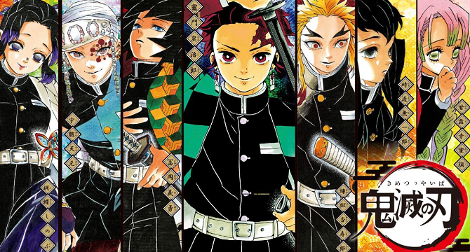

Cuerpo de Exterminio de Demonios (鬼き殺さつ隊たい, Kisatsutai) fue una organización que estuvo vigente por más de 1000 años, dedicada a proteger a la humanidad de los Demonios.
Fue fundada por la Familia Ubuyashiki hace más de 1000 años debido que, tras el hecho de que uno de sus miembros se convirtiera en demonio, toda la familia fue maldecida y todos los recién nacidos morían poco tiempo después del nacimiento. Los sacerdotes les aconsejaron encomendar su vidas a matar al demonio y de ese modo, el apellido Ubuyashiki podría seguir existiendo por muchos más años. Desde entonces se llevó a cabo la fundación de la organización y fue liderado por cientos de generaciones por miembros de la Familia Ubuyashiki.
La organización estuvo compuesta por cientos de Cazadores de Demonios y nunca fueron reconocidos por el gobierno. Su nonagésimo séptimo líder fue Kagaya Ubuyashiki y, tras su fallecimiento, Kiriya Ubuyashiki se convritió en el nonagésimo octavo líder hasta el momento de la disolución de la organización.

Para convertirse en un cazador de demonios, un individuo debía ser capaz de pasar la Selección Final, un test que se usaba como examen de entrada para unirse al Cuerpo de Exterminio. Durante ésta selección, un grupo de siete personas debía sobrevivir en una ladera de una montaña infestada de demonios sin ningún tipo de ayuda del exterior.
A los estudiantes que lograban pasar el examen, se les otorgaba el siguiente equipamiento:
El uniforme característico de los Cazadores de Demonios que fue creado con una tela ligera y especial que permitía protegerlos del aire, la humedad y del fuego, inclusive, las garras y dientes de un demonio no serían suficiente para destruir la tela con la cual fue creado.